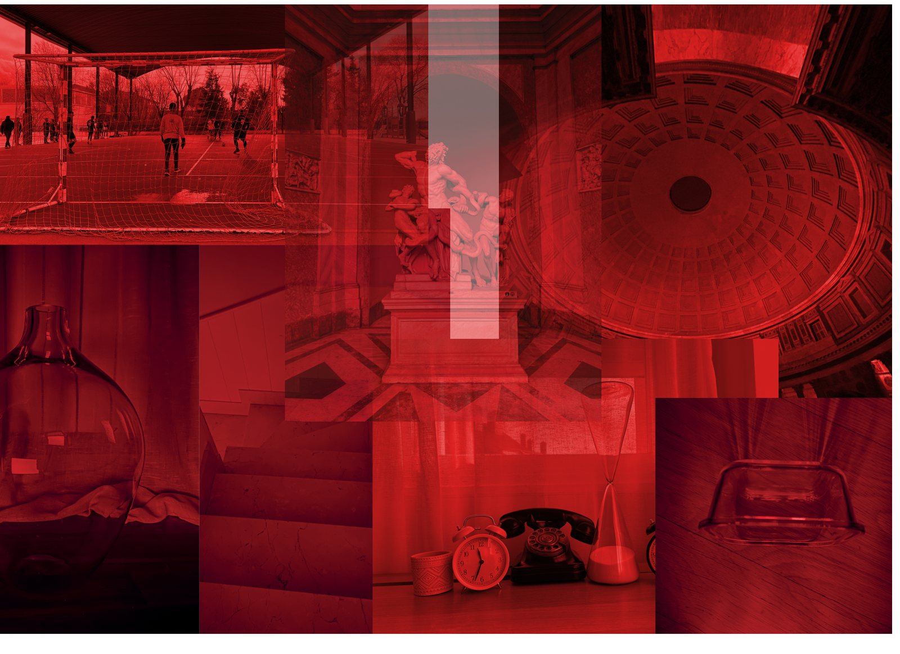

02 / 09
Reflejos que sanan
- Año
- 2026
- Medidas
- 10 × 15 cm
- Técnica
- Fotografía digital intervenida mediante superposición digital
La imagen habla de aquello que se recompone lentamente a través de la observación. Los reflejos aparecen como espacios intermedios y la realidad deja de ser fija y comienza a transformarse. Sanar no sucede de manera visible, ocurre en pequeñas capas, en objetos cotidianos, en lugares aparentemente vacíos que siguen sosteniendo algo de nosotros, pero no vemos con claridad.